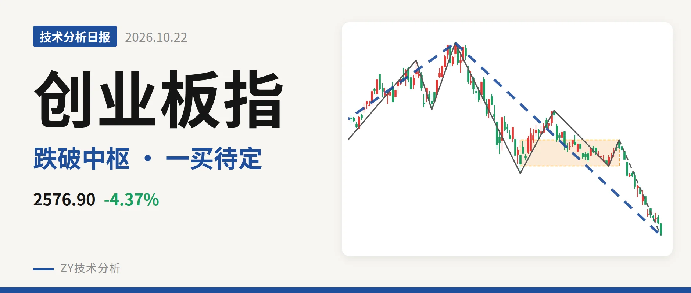
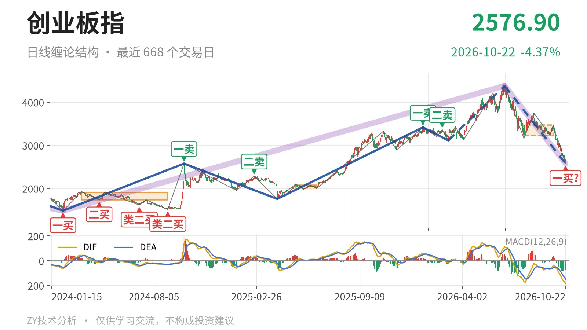
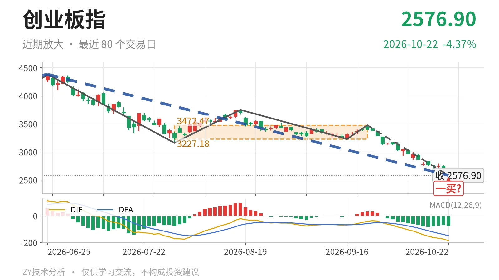

创业板指｜跌破3227中枢 暂定一买待验证

最近日线中枢 3227.18—3472.47点，收盘位于中枢之下
一句话：日线下跌段延续，暂定一买没有背驰支撑
🧭 走势结构：大级别上涨回撤，日线下跌段延续
当前处于6月25日以来的日线下跌线段中，该线段还在延续。更大级别走势里，2024年2月5日至2026年6月25日的上涨段尚未走完，但自6月25日高点4380.41点回落后，到10月22日已跌41.2%，最新收盘2576.90点。日线线段由5笔组成，9月22日至10月22日的下跌笔没有结束。结构上已不是中枢震荡，而是向下离开最近中枢后的下跌段。

📍 中枢位置：跌破最近中枢下沿，未见回抽
最近日线笔中枢为7月30日至9月22日的3227.18—3472.47点，尚未完成。这个中枢较5月14日至6月23日的1996.96—2076.91点明显上移。最新收盘2576.90点低于下沿3227.18点约20.2%，已经跌离中枢。价格离开后没有回到下沿上方，中枢上移后的回踩失败，结构重心转弱。
🎯 买卖点：10月22日一买只是暂定
10月22日出现日线笔级别一买，价格2576.90点，所在笔为9月22日至10月22日的下跌笔。该笔没有结束，因此这个一买是暂定的一买，会随这一笔的延伸而变化。此前1月13日一卖3416.84点、2月25日二卖3363.18点之后，3月9日出现线段三买3111.88点，随后6月25日续创4380.41点新高，所以那两个卖点只对应日线笔级别。

📉 背驰：绿柱面积缩，DIF却新低
当前下跌笔与前一段6月25日至7月30日的下跌笔对比最直接。前段绿柱面积1837，DIF低点-171.1；当前9月22日至10月22日下跌笔价格从3472.47点跌至2576.90点，创下新低，绿柱面积缩到784，但DIF低点下移到-186.3。面积缩小而DIF更弱，谈不上“新低不新弱”，不是标准底背驰。暂定一买没有背驰结构支撑。
🔭 关键位置观察：反抽先看3227点一线
下方先看2576.90点能否成为这一下跌笔的终点；若继续跌破，暂定的一买便随新低失效。反抽若不能回到3227点一线，结构上构成三卖，中枢下移继续。若重新站上3227点，下跌更可能是中枢扩展，后续才有靠近3472点一带的结构修复。当前结构偏弱，弱在跌破中枢下沿后无回抽，且下跌笔没有标准底背驰。
⚠️ 本文为基于公开行情数据的缠论技术结构记录，由程序自动计算并生成，仅供学习交流，不构成任何投资建议。市场有风险，投资需谨慎。